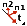

Modelagem de um pórtico rotulado
Objetivo
Determinar as Tensões no pórtico de seção circular, diâmetro de 24 cm, confecionada em Aço e com altura e comprimento de 3 m.
Resolução utilizando o abaqus 6.12 student edition
O procedimento usual de resolução é demonstrado no seguinte fluxograma, cuja ordem pode eventualmente ser alterada por conveniência:

1. Pré-processamento
1.1. Início da análise
- Na caixa Start Session, selecione With Standard/Explicit Model.
- No Menu Model, clique com o botão direito em Model-1 e selecione Rename.
- Digite AnálisePórtico e clique em OK.
1.2. Criação da geometria base e definição do tipo de elemento
- No Menu Model, dê um duplo clique em Parts.
- No campo Name digite Pilares.
- Em Modeling Space selecione 2D planar.
- Em Base Feature selecione Wire.
- Em Approximante Size digite 20 e clique em Continue...
{kind=link}
- Na Caixa de Ferramentas selecione Create Lines: Connected, digite 0,0 e 0,3, teclando Enter entre uma e outra, e tecle Esc.
- Repita o procedimento digitando desta vez 3,0 e 3,3 ao final clique em Done.
{kind=link}
- No Menu Model, dê um duplo novamente clique em Parts.
- No campo Name digite Viga.
- Em Modeling Space selecione 2D planar.
- Em Base Feature selecione Wire.
- Em Approximante Size digite 20 e clique em Continue...
{kind=link}
- Na Caixa de Ferramentas selecione Create Lines: Connected, digite 0,3 e 3,3, teclando Enter entre uma e outra, tecle Esc e clique em Done.
{kind=link}
1.3. Atribuição das propriedades dos materiais
- No Menu Model, dê um duplo clique em Materials.
- No campo Name digite Aço.
- Na caixa Edit Material clique em Mechanical, selecione Elasticity e clique em Elastic.
- Em Young’s Modulus digite 200E9 e 0.2 em Poisson's Ratio. Ao final, clique em OK.
{kind=link}
1.4. Atribuição das propriedades das seções
- No Menu Model, dê um duplo clique em Profiles.
- Em Name digite SeçãoCircular D24cm.
- Selecione Cirular e clique em Continue...
{kind=link}
- Na janela Edit Profile, digite 12E-2 em r e clique em OK.
{kind=link}
- No Menu Model, dê um duplo clique em Sections.
- Em Name digite Seção Viga e Pilar.
- Em Category selecione Beam.
- Em Type selecione Beam e clique em Continue...
- Na janela Edit Beam Section clique em OK.
{kind=link}
1.5. Associação das seções
- No Menu Model, abra Parts (2) e em seguida Pilares.
- Clique duas vezes em Section Assigments.
- Selecione os Pilares e clique em Done.
- Na janela Edit Section Assigment clique em OK e em seguida em Done.
{kind=link}
- Clique no icone 
- Selecione os pilares e clique em Done
- Repita o procedimento para a viga.
{kind=link}
- No Menu Model, abra Assembly e dê um duplo clique em Instances.
- Selecione Pilares e Vigas e Parts e Independent (mesh on instance) em Instance Type. Ao final clique em OK.
{kind=link}
- No Menu Model, dê duplo clique em Constraints.
- Selecione MPC Constraints e clique em Continue...
{kind=link}
- Clique em Remove Selected.
- Em Select entities to remove selecione Edges, clique na viga e em seguida em Done.
{kind=link}
- Após a viga ser suprimida, tecle Esc, selecione o ponto superior do pilar à esquerda.
{kind=link}
- clique em Invert Display e Selecione o ponto esquerdo da Viga e clique em Done.
- Em MPC Type selecione Pin.
{kind=link}
- Repita o procedimento para o pilar da direita e o ponto direito da viga. Ao final, clique em Replace All.
{kind=link}
1.6. Aplicação das condições de contorno
1.6.1 Cargas
- No Menu Model, dê um duplo clique em Steps (1).
- Selecione Static, General e clique em Continue...
- Na janela Edit Step clique em Ok.
{kind=link}
- No Menu Model, dê um duplo clique em Loads.
- Selecione Line load e clique em Continue...
{kind=link}
- Selecione a viga e clique em Done.
- Em Edit Load digite -10E3 no campo Component 2 e clique em OK.
{kind=link}
1.6.2 Apoios
- No Menu Model, dê um duplo clique em BCs.
- Altere Step para Initial.
- Selecione Symetry/Antisymmetry/Encastre e clique em Continue...
{kind=link}
- Selecione os pontos inferiores dos pilares e clique em Done.
- Na janela Edit Boundary Condition selecione ENCASTRE (U1 = U2 = U3 = UR1 = UR2 = UR3 =0) clique em OK.
{kind=link}
1.7. Criação da malha
- Em Module selecione Mesh.
- No Menu Principal, clique em Mesh e posteriormente em Element Type.
- Selecione o portico e clique em Done.
- Na janela Element Type selecione Beam em Family.
- Clique em OK e em seguida em Done.
{kind=link}
- No Menu Principal, clique em Seed e posteriormente em Instance.
- Selecione o portico e clique em Done.
- Em Approximate Global Size digite 0.2, clique em OK e em seguida Done.
{kind=link}
- No Menu Principal, clique em Mesh e posteriormente em Instance.
- Selecione o portico e clique em Done.
2. Processamento
- No Menu Model, dê um duplo clique em Jobs.
- Na janela Create Job clique em Continue...
- Na janela Edit Job clique em OK.
- Abra Jobs e clique com o botão direito em Job-1 e clique em Submit.
- Se aparecer uma janela dizendo “Job files already exist for Job-1. OK to overwrite?”, clique OK.
- Aguarde o processamento dos dados, que estará concluído quando aparecer (Completed) ao lado de Job-1 no Menu Model.
3. Pós-processamento
3.1. Análise gráfica
- No Menu Model, clique com o botão direito em Job-1(Completed) e clique em Results.
- Na Caixa de Ferramentas, clique em Plot Contours on Deformed Shape.
- Na Área de Ferramentas no canto superior à direita selecione SM e SM1.
- No Menu Principal, clique em Viewport e em seguida em Viewport Annotation Options...
- Na janela aberta selecione a aba Legend.
- Clique em Set Font.
- Na nova janela, altere Size para 14.
- Clique em OK nas duas janelas abertas.
{kind=link}